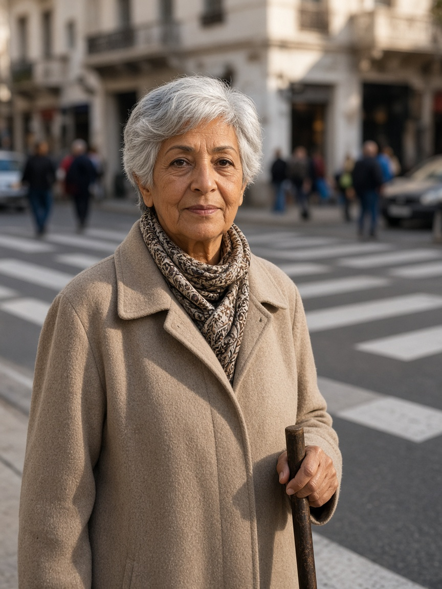
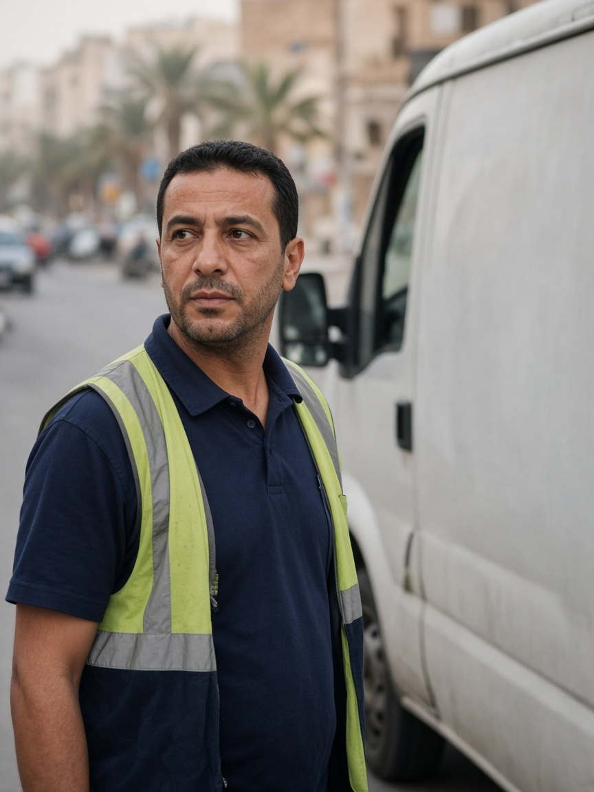
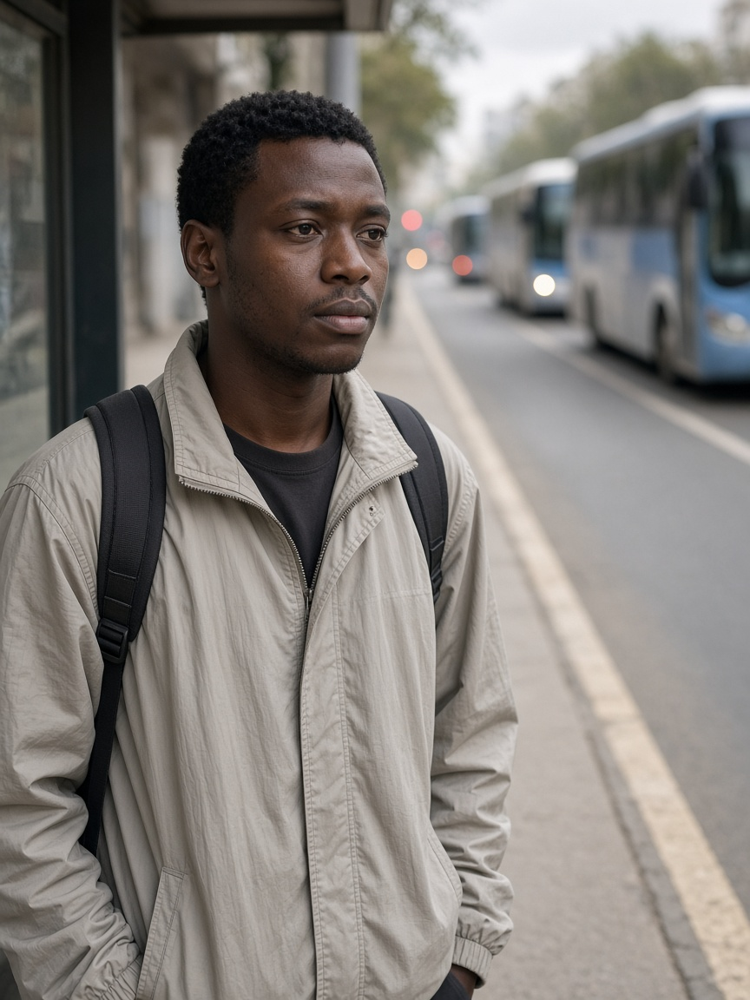
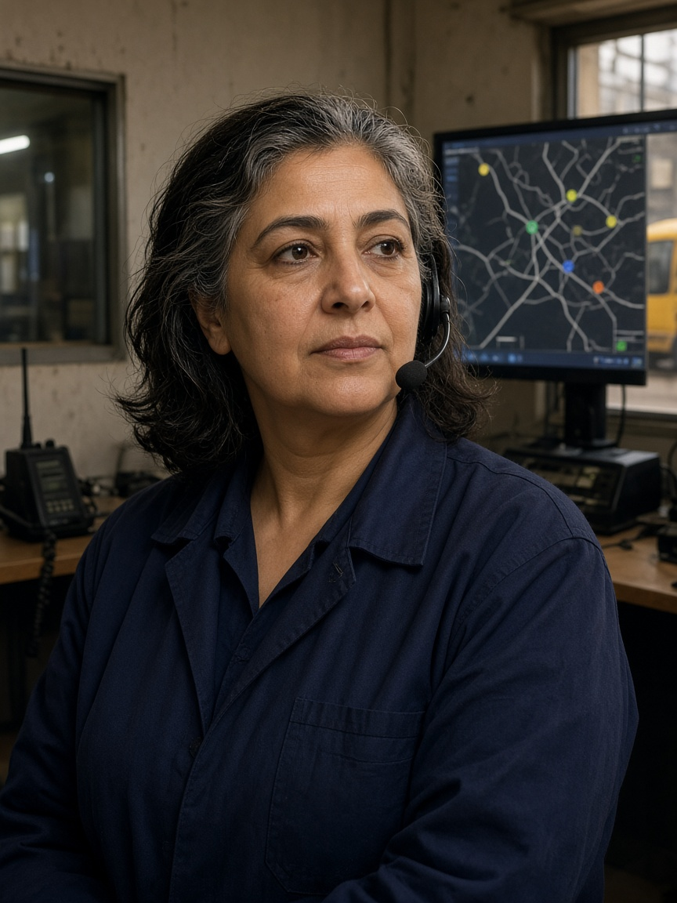
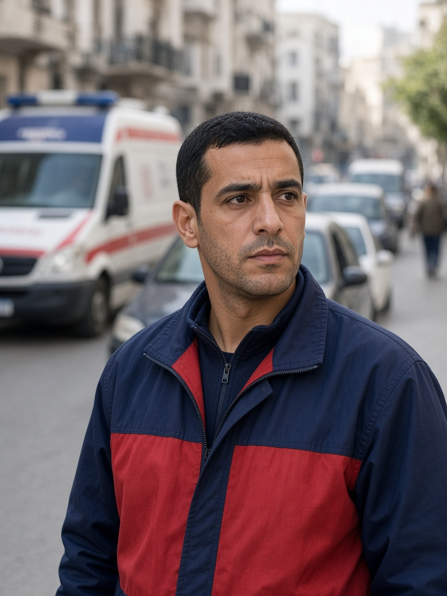
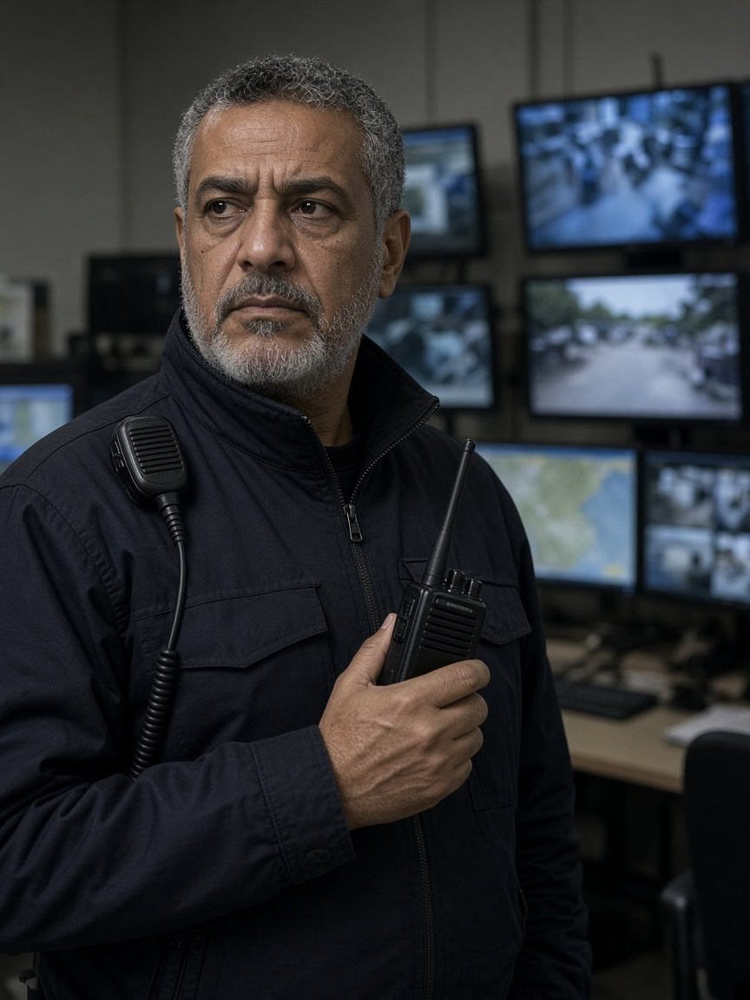

Six portraits: Amara, David, Chidi, Rosa, Marcus, and Omar. Ages and jobs are design readings of groups named in published counts. They are not people we interviewed.
This is how we understand the users. It is not a set of interviews.
| Group named in the sources | Who carries that need |
|---|---|
| Pedestrians. Older people and people with disabilities, named in the 2024 strategy. Pedestrians were 28% of the 2023 deaths in the WHO investment case that quotes ONSR. | Amara |
| Occupants of motor vehicles. They carry most of the health cost in that case. | David |
| TRANSTU passengers in Greater Tunis. 187.4 million paying trips in 2018, not this year. | Chidi |
| The operator and the crash record. One reader. Not a second controller. | Rosa |
| Civil Protection, which answers road emergencies. We did not ride with a crew. | Marcus |
| Readers of the crash file. A residual is not a cause. | Omar |
2023 deaths are published as both 2,273 and 1,216, with the same 5,796 crashes. Show both. Do not average them.
The next six slides are the cards. Each one says who is affected, before any solution is named.
Illustrations, not interviewed people. Special needs stay on Amara’s card. School-street air is a place, not a seventh person.

Retired pedestrian; uses a cane. Crosses a busy central street for shops and transit. Tunis design context, as an assumption.
“I need enough time to finish crossing, even when traffic is busy.” Design statement, not a quote.
Affected: Amara, while she is still in the crossing. Her fear is that cars receive green before she finishes.
Illustration · not an interviewed person.

Delivery-van driver. The “more than 60 stops” day is a design reading.
“I can plan around a longer trip if I know how long it will actually take.” Design statement, not a quote.
Affected: David, on the trip that does not finish. His fear is that a better mean hides the tail.
Illustration · not an interviewed person.

Frequent bus passenger on a high-frequency corridor, where regularity is the service.
“Buses should arrive regularly—not three at once after a long wait.” Design statement, not a quote.
Affected: Chidi, waiting through a long gap. His fear is three buses after one long wait.
Illustration · not an interviewed person.

Incident-report reader. She reads disruption and the crash record. She does not change the light.
“Show me why priority was granted or denied, and let me respond safely.” Design statement, not a quote.
Affected: Rosa, reading a refusal that has no reason.
Illustration · not an interviewed person.

Urban ambulance crew, standing in for Civil Protection. We did not ride with them.
“Get us through safely, and make sure traffic recovers after we pass.” Design statement, not a quote.
Affected: Marcus, and the people his priority delays. His fear is a green light into a full link.
Illustration · not an interviewed person.

Network duty officer. He monitors incidents and coordinates a response.
“Tell me what is wrong, why you think so, and whether I can still trust the data.” Design statement, not a quote.
Affected: Omar, when a queue might be a crash, demand, or a dead sensor.
Illustration · not an interviewed person. The portrait file is p8-omar.png. He is the sixth card.
| Who is affected | Need | Problem |
|---|---|---|
| Amara | Enough clearance to finish. | Clearance assumes a faster walk than hers. |
| David | The real duration, including the bad trip. | A better average hides the late or unfinished trip. |
| Chidi | Priority only after an unusual gap. | Buses bunch, then the early bus is treated as urgent. |
| Rosa | A reason code she can read afterward. | A refusal with no reason cannot be checked after the shift. |
| Marcus | An exit check, then recovery. | A green light into a full exit only moves the queue. |
| Omar | The class, and whether the sample is fresh. | A residual can be a crash, extra demand, or a quiet sensor. |
| Who | Survey | Interview | Research that supports the need |
|---|---|---|---|
| Amara | No survey file | Not interviewed | Pedestrians were 28% of the 2023 deaths in the WHO case quoting ONSR. The 2024 strategy names older people and people with disabilities. Clearance guidance is about 1.07 m/s, and slower where needed. |
| David | No survey file | Not interviewed | Occupants carry most of that case’s health cost. One matched seed finished 71, 84, and 70 of 84 trips. Mixed. No winner. |
| Chidi | No survey file | Not interviewed | TRANSTU: 187.4 million paying passengers in 2018, not this year. Waiting time is valued above in-vehicle time in DfT appraisal guidance. |
| Rosa | No survey file | Not interviewed | ONSR compiles the crash record. SCATS documents an audit trail. That is an analogy, not a Tunis control room we visited. |
| Marcus | No survey file | Not interviewed | Civil Protection answers road emergencies. A Taipei survival-per-minute figure is a citation from elsewhere. This simulation does not output lives saved. |
| Omar | No survey file | Not interviewed | The detector has classes. An anomaly does not name a cause. FHWA congestion shares are not a map of these junctions. |
A percentage, a sample size, or a quote from a survey or an interview would be invented. Those columns stay empty on purpose.
| Who is affected | Problem | Idea we keep |
|---|---|---|
| Amara | Clearance assumes a faster walk. | Hold the conflicting green until she finishes, and count truncations. |
| David | The average hides the unfinished trip. | Show unfinished trips and the tail beside the mean. |
| Chidi | Buses bunch. | Ask for green only after an unusual gap. An early bus gets nothing. |
| Rosa | A refusal with no reason. | Explain one grant or denial with the reason code and a citation, or abstain. |
| Marcus | Green into a full exit. | Authenticated request, an exit check, then recovery. |
| Omar | A residual is not a verdict. | Publish the class, the residual, and whether the sample is fresh. |
Refused: a scraped map treated as truth, a camera that guesses ability, a chatbot that writes the light, a lives-saved claim. A later file we still owe — a measured crossing, a dated GTFS extract, a driver message, a corridor file — does not become a solution on this slide.
| Who is affected | Problem | Solution |
|---|---|---|
| Amara, while she is still in the crossing | Clearance assumes a faster walk than hers. | A3 asks. A1 holds the conflicting green. Truncations are counted. |
| David, on the trip that does not finish | A better average hides the late trip. | The evidence page keeps unfinished trips in the count, next to the mean. |
| Chidi, waiting through a long gap | An early bus is treated as urgent. | A3 asks only for a late bus or a large gap. Pedestrian clearance stays ahead of the bus. |
| Rosa, reading a refusal with no reason | The no cannot be checked later. | S2 returns one cited explanation, or an abstention. She does not write the signal. |
| Marcus, and the people his priority delays | Green into a full exit only moves the queue. | A2 sends route and expiry. A1 checks the exit, then recovers: Max-Pressure, actuated, fixed-time. |
| Omar, when the queue has three possible meanings | Crash, demand, or a dead sensor. | A4 publishes the class and the freshness. It does not name the cause. Stale data leaves A1 on local control. |
Only A1 writes the signal. The language-model layer explains the log, or abstains.
| Source | What it can support | |
|---|---|---|
| Accidents — ONSR, INS, WHO published totals | Context | Who is harmed, at national or governorate scale. Not this junction and this hour. 2023 deaths are 2,273 and 1,216. Show both. |
| Roads and intersections — OpenStreetMap | Later | A labelled map. Row 14 is not started. Not today’s speeds. |
| Traffic lights — our SUMO runs | Now | Reason codes and legal phases in the model. No public adaptive-signal network in Tunis was found. |
| Weather — a station joined to a junction and an hour | Later | A regime tag, after that table exists. Not “rain caused the crash.” |
| Traffic and public transport — TRANSTU, with the year | Later | 187.4 million paying passengers in 2018. Not a live bus, and not current ridership. |
| Scraped map colours, news, or social posts | Reject | Nothing as evidence. Not a ground-truth accident or a live speed. |
A risk factor for a specific intersection, hour, and weather type was not found.
A shaded map needs rows of intersection, time, and the thing being counted, plus the denominator. That table is not in the repository. Weather is not joined to a junction and an hour, so rain is not a layer on this map.
Will not draw: rain over roads, crash pins from the news, or a green map that hides the link whose proxy got worse.
Later, with the method printed on it: counts of a class, or delay, by link and by time window, with the sample size on the cell. A dark cell is not a cause and not a life saved.
Until that table exists, this stage stays a refusal. It is not an empty picture pretending to be a result.
| Who is affected | What changes for them |
|---|---|
| Amara | Conflicting traffic stays red while the crossing is occupied. The fixture counted zero truncations. That is not a count of crashes prevented. |
| David | A jammed scenario cannot look safe just because the average improved. Unfinished trips stay visible. |
| Chidi | An early bus does not steal the crossing from the person still in it. |
| Rosa | The reason is kept, so a bad pattern can be found after the shift. She still does not change the light. |
| Marcus | He is not sent into a blocked exit, and Amara’s crossing is not cut. Civilian delay is logged beside his time. Not lives saved. |
| Omar | A stale sensor is not called a healthy road, so a false all-clear is not the alert. |
Fewer conflicts in the model. Not fewer deaths in Tunisia. No lives saved. No measured air. No Tunis deployment. No winner.